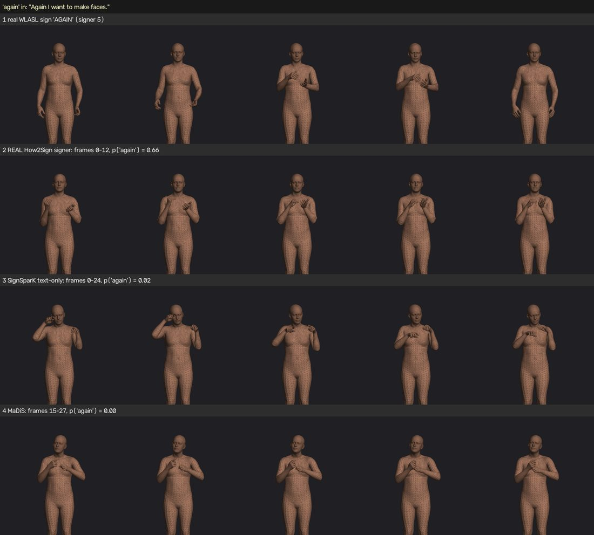

SignSparK and MaDiS: can either one turn text into real ASL signs?
We tested two published text-to-sign models end to end: their papers, their released code, our own retraining, and a new check of whether the output contains real ASL signs. This page is the bird's-eye view of what we found.
Part 1SignSparK
What SignSparK is
SignSparK (ECCV 2026, University of Surrey) generates 3D signing motion (an SMPL-X body with hands) with a flow-matching model. It is trained on real signing videos that were converted into 3D poses. Its main idea is to train with sparse keyframes: for every sign, three frames (start, middle, end) are given to the model, and it learns to fill in the motion between them.
The model can be used in two ways:
What we did
We vendored the authors' code unchanged into a new git repository and checked it against the paper line by line. We downloaded the released data (How2Sign, CSL-Daily, PHOENIX; BOBSL is not released) and then:
- evaluated the released model with the paper's own metric (SOKE's DTW joint error) on all three datasets;
- retrained the model from scratch with exactly the paper's settings (about 24 hours of GPU time, body and hand models);
- built an independent ASL sign recogniser and used it to check whether the generated motion contains real signs.
Result 1: keyframe mode works
Joint error between the generated and the real signing (lower is better). Our retrained model and the released model both beat the paper.
| Keyframe mode | Body error | Hand error | ||||
|---|---|---|---|---|---|---|
| Paper | Released | Our retrain | Paper | Released | Our retrain | |
| How2Sign (ASL) | 1.68 | 1.21 | 1.35 | 2.80 | 2.10 | 2.21 |
| CSL-Daily (Chinese SL) | 2.02 | 1.01 | 1.15 | 2.71 | 1.65 | 1.70 |
| PHOENIX (German SL) | 1.92 | 1.23 | 1.23 | 2.25 | 1.94 | 1.82 |
One caveat: plain interpolation (SLERP) between the same keyframes scores almost as well (How2Sign body 1.24, hands 2.39). The paper's own SLERP baseline is 2.5–3.5× worse than a correct SLERP, so the paper overstates how much the model adds on top of the keyframes.
Result 2: text-only mode does not work
Here the model gets only the sentence. We also scored a "standing still" pose: the average body position, frozen for the whole clip. It contains no signing at all. A model that really signs the sentence should beat it easily.
Body joint error, text-only, How2Sign (lower is better)
Same 200 test sentences for every row; the dashed line is the "standing still" pose.
Scale 0–10. CSL-Daily and PHOENIX show the same pattern (released 8.14 / 5.84, retrain 8.05 / 5.34, standing still 6.94 / 4.50).
Three things stand out:
- The model loses to standing still. Moving signing that is wrong is penalised more than not moving at all.
- Our retrain gives the same number as the released model (8.73 vs 8.71). So the failure is not caused by the released checkpoint or by our setup.
- The paper's number (6.30) sits at the standing-still level. When we sample with only 1 step, the output stays close to the average pose and scores 7.04, the same as standing still; on PHOENIX it reproduces the paper exactly (4.41 vs 4.40). More steps produce more motion and a worse score. The metric rewards motion that stays near the average pose, so a good number here does not mean correct signs.

Result 3: the sign recogniser finds no real signs
Joint error cannot tell us whether a sign is right, so we trained a sign recogniser on 1,000 real isolated ASL sign videos (WLASL, 124 signs, 53 signers). On signers it never saw, it names the correct sign 57% of the time (chance: 0.8%). We then asked: when a sentence contains a word such as "again", does that word's sign appear in the motion more often than in sentences without the word?
Sign detection score (0.5 = no trace of the sign)
Average over the words the recogniser can find in real signing. The dashed line is chance.
Scale 0.45–0.70. SignSparK: p = 0.36, no signal at all. Real signing: p = 0.0005.

What is wrong with SignSparK
The whole sentence is squeezed into one averaged vector (no word-by-word attention). We measured it: keeping the random noise fixed and swapping the sentence changes the output only 0.12–0.22× as much as keeping the sentence and swapping the noise. The output is decided mostly by chance, not by the words.
Keyframes are removed for only 10% of training examples, so only about 9% of training is text-only. The model becomes an excellent keyframe in-betweener and a poor text-to-sign model.
The paper's joint-error metric gives a better score to standing still than to wrong signing. The paper reports no standing-still baseline and no back-translation for text-only, so its text-only table cannot show whether signs are correct.
The paper's loss weights are 2:1:1; the released code uses 1:2:1 plus an extra loss the paper never mentions. The released checkpoint was trained on 15× more data than the paper's. Neither difference explains the failure: our retrain with the paper's exact settings behaves the same.
Part 2MaDiS
What MaDiS is
MaDiS (2026, from the authors of SOKE) treats signing like a language. A tokenizer turns real 3D signing into discrete "sign tokens" (separately for body, left hand and right hand). A language model (Qwen3, 0.6B parameters) then learns to write those tokens from an English sentence, word by word. Unlike SignSparK, it reads the sentence token by token.
Training has three stages: (1) the sign tokenizer, (2) language-model pretraining on sign tokens, (3) fine-tuning on How2Sign.
What has been achieved
The released model reproduces its paper almost exactly, using the authors' own test code on all 2,308 How2Sign test clips:
| How2Sign, joint error | Paper | Our run | Standing still |
|---|---|---|---|
| Body | 6.59 | 6.575 | 5.66 |
| Hands | 9.45 | 9.414 | 9.63 |
So our setup is correct. But the same warning applies as for SignSparK: standing still beats MaDiS on the body, and the hands are nearly tied.
The sign recogniser gives MaDiS a better result than SignSparK. Its output contains a weak but real trace of the correct signs, mostly for frequent words such as "all" and "after":
Sign detection score (0.5 = no trace of the sign)
Compared with the real signing in the same 3D format MaDiS was trained on.
Scale 0.45–0.70. MaDiS: p = 0.0015, about half the strength of real signing. It shows up on average across many sentences but is not visible in single examples.

Problems found along the way
- Its official sign-quality evaluator is unreliable. On MaDiS's own retrieval evaluator (SiCLIP), a standing-still pose scores 62.6% top-1, far above real signing (34.2%) and MaDiS (28.0%).
- Part of the released data is broken. The released validation and test sign tokens are noise in all three datasets (the training tokens are fine). The paper's back-translation scores (SiBLEU) are computed against those test tokens, so they cannot be trusted.
- Sentence matching is at chance. If you ask which of 200 real clips a MaDiS output belongs to, it picks the right one 1% of the time (chance: 0.5%).
Full MaDiS replication: running now
The whole training pipeline is being retrained from scratch, in full precision as in the paper, on How2Sign, CSL-Daily and PHOENIX.
What we hope to learn from it
- Whether the paper is reproducible from scratch, not only from the released checkpoint.
- Whether clean test tokens change the picture. With correctly tokenised test data, MaDiS's own quality scores become meaningful for the first time.
- Whether the faint sign trace gets stronger. MaDiS is the only model that showed any real sign content. The retrained model will be judged with the same sign recogniser, which gives a direct before/after comparison.
Realistic expectation: the retrain should confirm the paper's numbers. A large jump to clearly readable signs would be a surprise, because the released model, trained the same way, is far from that.
SummaryWhere things stand
| SignSparK | MaDiS | |
|---|---|---|
| Paper numbers reproduced? | Keyframe mode: yes, better. Text-only: no (body) | Yes, almost exactly |
| Beats standing still (text only)? | No | No on body, tie on hands |
| Real signs in the output? | None detected | Weak trace on a few frequent words |
| Retrained by us? | Done, same behaviour | Running, done ~29–30 Oct |
| Usable for text → ASL now? | No | No |